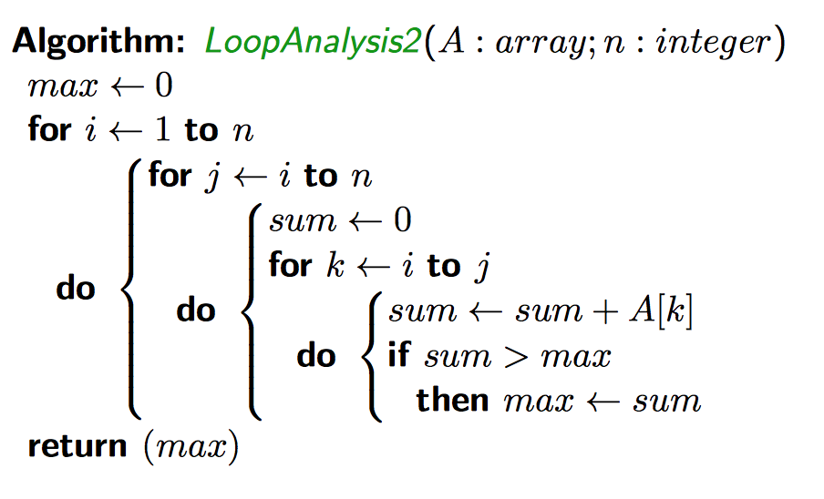
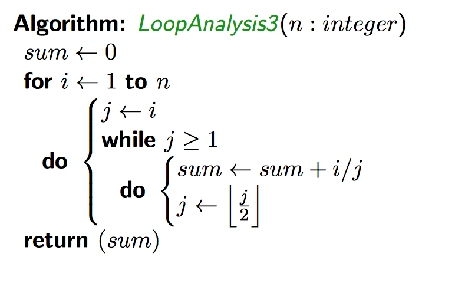
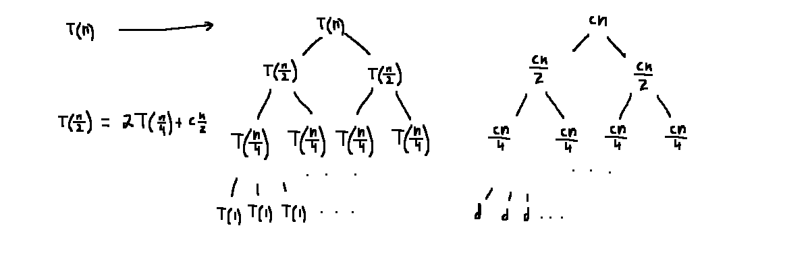

(increasing order)


A formula expressing the general term \(a_n\) in terms of previous terms. Solving refers to finding a formula that is not recursive
e.g. for a recurrence relation:
\[T(n) = \begin{cases}
aT\left(\frac{n}{b}\right) + cn, &n > 1\\
d, &\text{otherwise}
\end{cases}\]
For the relation:
\[T(n) = \begin{cases}
2T\left(\frac{n}{2}\right) + cn, &n > 1 \text{ is a power of 2 }\\
d, n=1
\end{cases}\]

Row \(i\) has \(2^i\) nodes with value \(\frac{cn}{2^i}\).
Given \(n=2^j\) for some \(j\), the tree wil have \(j\) rows.
\[\begin{align*} \text{Total} &= j(c) + d2^j\\ &= (\log_{2} n)c + dn \end{align*}\]
For a recurrence relation in the form:
\[T(n) = aT\left(\frac{n}{b}\right) + \Theta(n^y), \quad a\ge 1, b \gt 1\]
Where \(n\) is a power of \(b\). Define \(x=\log_b{a}\). Then:
\[T(n) \in \begin{cases} \Theta(n^x), &y \lt x\\ \Theta(n^x \log n), &y = x\\ \Theta(n^y), &y \gt x\\ \end{cases}\]
For a recurrence relation in the form:
\[T(n) = aT\left(\frac{n}{b}\right) + f(n)\]
Where \(n\) is a power of \(b\). Define \(x=\log_b{a}\). Then:
\[T(n) \in \begin{cases} \Theta(n^x), &\exists \epsilon \gt 0 \mid f(n) \in O(n^{x-\epsilon})\\ \Theta(n^x \log n), &f(n) \in \Theta(n^x)\\ \Theta(f(n)), &\exists \epsilon > 0 \mid \frac{f(n)}{n^{x+\epsilon}} \text{ is increasing }\\ \end{cases}\]
\[T(n) = 3T\left(\frac{n}{4}\right) + n\log n\]
\[\begin{align*} x &= \log_b a\\ &= \log_4 3\\ &\approx 0.793\\ \\ \text{Let } \epsilon &= 0.1\\ \\ \frac{f(n)}{n^{x+\epsilon}} &= \frac{n^1 \log n}{n^{0.793+\epsilon}}\\ &= \frac{n^1 \log n}{n^{0.893}}\\ \text{This is an increasing function,} &\therefore \text{ case 3 applies }\\ &\Rightarrow T(n) \in \Theta(n\log(n))\\ \end{align*}\]